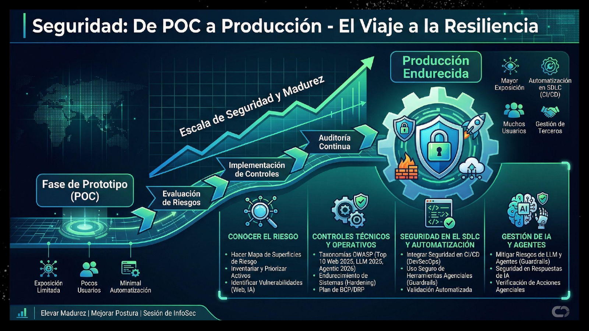
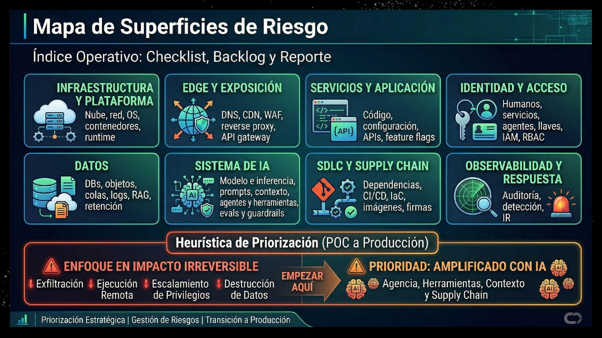
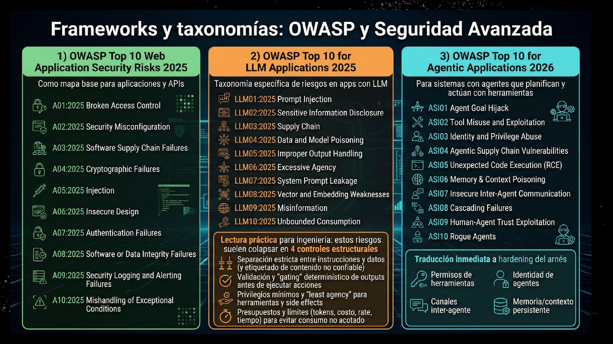
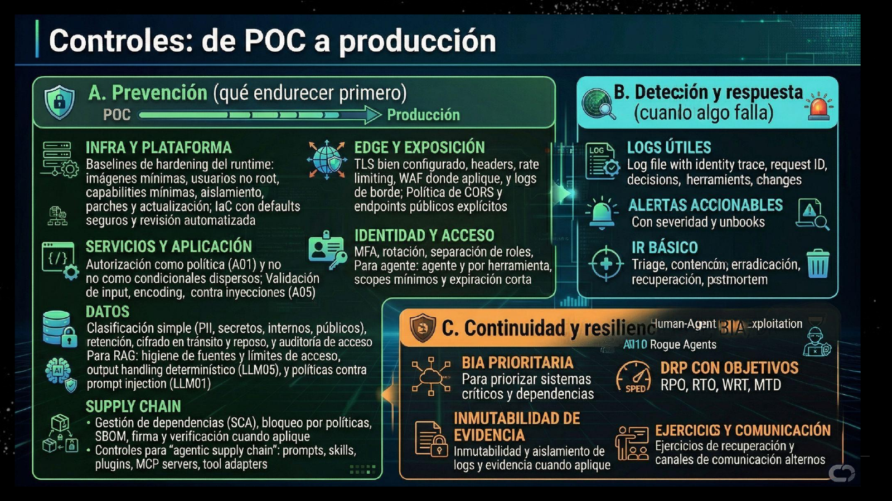
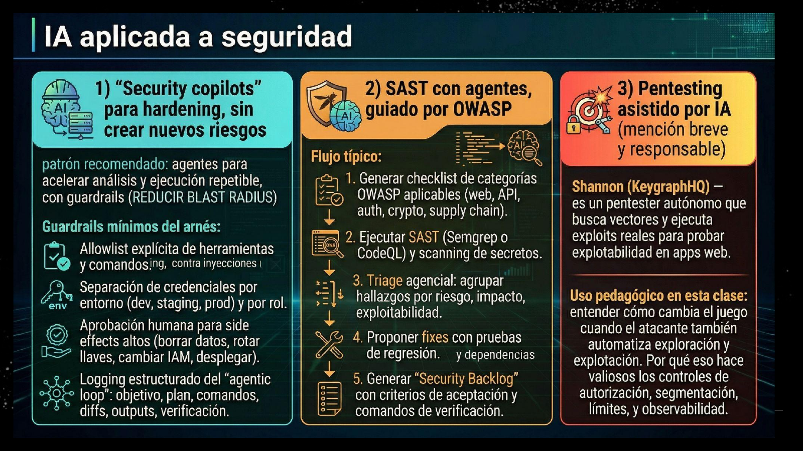

ESTACIÓN 10 · COHORTE 2
Ciberseguridad
De POC funcional a pentesting asistido con Shannon
MAPA DE LA SESIÓN
Hoy aterrizamos seguridad en una demo ejecutable
4
actos para pasar de marco mental a evidencia
Entender por qué producción cambia el riesgo.
Convertir superficies en checklist, backlog y reporte.
Usar OWASP y controles para decidir qué mirar.
Ejecutar Shannon contra local o staging aislado.
Cierre esperado: hallazgos, PoCs, fixes o tareas verificables.

ÍNDICE OPERATIVO
Las superficies ordenan la conversación
Checklist: qué puede fallar.
Backlog: qué necesita dueño, fix y validación.
Reporte: dónde queda evidencia y riesgo residual.
Scope de demo: qué tocará Shannon y qué queda fuera.
El mapa evita que seguridad se convierta en una lista de herramientas sin relación con el producto.

TAXONOMÍAS
OWASP ayuda a nombrar el riesgo y diseñar pruebas
Web: aplicación, API, auth, configuración, logging y supply chain.
LLM: instrucciones, datos, output handling, agency y consumo.
Agentic: herramientas, identidad, memoria, contexto y canales entre agentes.
En la demo, cada hallazgo se liga a una categoría y a una verificación.

HARDENING
Los controles definen qué puede hacer el agente
Prevención: reducir rutas de abuso antes de exponer el sistema.
Detección: logs y alertas para saber qué pasó.
Respuesta: triage, contención y recuperación.
Guardrails: permisos mínimos, credenciales separadas y aprobación para side effects altos.


DEMO
Shannon prueba explotabilidad con conocimiento del código
EntradaRepo fuente y URL de la app viva.
MétodoAnálisis white-box más explotación dinámica.
SalidaHallazgos con PoC reproducible.
ReglaSolo local o staging aislado.
Busca vectores desde el código.
Usa browser automation y herramientas CLI.
Descarta hipótesis sin exploit funcional.
Puede causar side effects. El entorno importa.
SHANNON HARDENING SPRINT
Del repo a un hallazgo accionable
npx @keygraph/shannon setup npx @keygraph/shannon start -u http://localhost:3000 -r /path/to/repo
Target aislado + datos sintéticos
Shannon con scope explícito
PoC, impacto y ruta
Fix o tarea verificable
DECISIÓN TÉCNICA
Un hallazgo sirve cuando cambia el backlog
¿Hay PoC funcional?
¿Qué activo o permiso queda comprometido?
¿Qué categoría OWASP describe el fallo?
¿Qué test o comando comprueba el fix?
¿Qué guardrail habría limitado el daño?
Decisión humana: severidad, owner, fix, verificación y cierre.
TAREA
Reporte de seguridad del producto
Top 5 riesgos: impacto, evidencia y prioridad.
Mapa de superficies: qué se revisó y qué queda fuera.
Hallazgos: severidad, PoC, fix y verificación.
Controles: prevención, detección, respuesta y guardrails agenciales.
Roadmap: quick wins, mediano plazo y cambios estructurales.
Seguridad madura cuando el riesgo termina en evidencia y trabajo verificable.